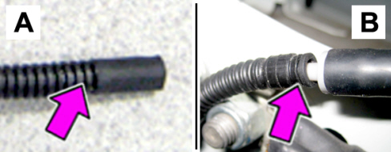
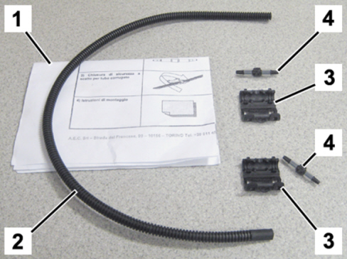
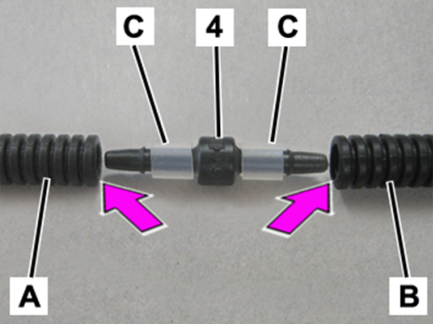
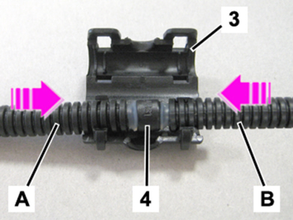
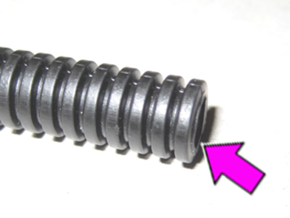
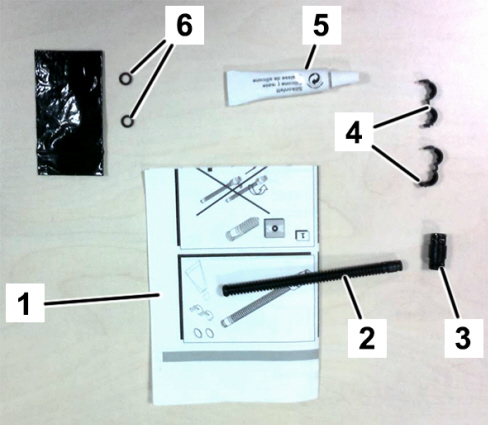
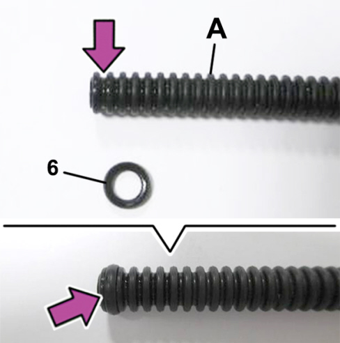
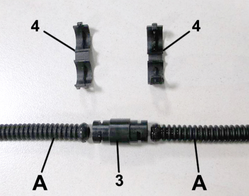
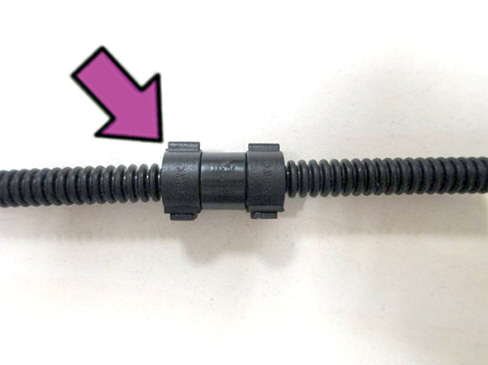

|


|
|
| Service News | ||
|
|
Various models
Versions: All models (*) |
|
|||
| 5050 1 211 EQ |
WINDSCREEN WASHER PIPES
Pipe repair kit - Service Solution |
|||

|
Cancels and replaces the following Service News due to extension of validity to current production models. • 50.02.11 dated 09/09/2011 Abarth models • 50.06.11 dated 09/09/2011 Fiat and Professional models • 50.01.13 dated 07/11/2013 Alfa models • 50.01.14 dated 05/03/2014 Lancia models |
(*) The Service News applies to the following models: 500 (150), Panda (169/271) (319/519), Grande Punto/Punto Evo (199/299), Idea (135/235), Palio/Palio WE (178), 500L (330/530), 500X (334), Bravo (198/298), Tipo (356/357/557), Fiorino/Qubo (225/300), Doblò (152/263), Ypsilon (101/402), Musa (184), Delta (181) MiTo (145), Giulietta (191), 159 (140), Giulia (620), Stelvio (630), 4C (643), Strada (278), Ducato (290/295).
CLAIMED FAULT
Poor / missing flow of window washer fluid and possible presence of moisture next to the pipe route
TECHNICAL CAUSE
Leak of fluid from the rear window and/or windscreen washer delivery pipe.
OPERATIONS AT THE DEALERSHIPS
DEALERSHIP BEHAVIOUR STANDARDS TOWARDS THE CUSTOMER
- Once the customer's claimed fault is confirmed, reassure the Customer that the fault will be solved by repairing the damaged pipe.
- After completing the operation, illustrate what has been done and ensure that the Customer is satisfied.
Service Solution
Kits to repair the rear window and/or windscreen washer delivery pipe are now available at the Spare Parts Dpt.
|
|
The kits can be applied only on the corrugated pipes (part no. 19054786). |
Once the customer's claimed fault is confirmed, repair the supply pipe to the rear window washer using the repair kit, according to the Operating Cycle below.
OPERATION CYCLE
Find the point where the leak of fluid takes place in the sections of the rear window and/or windscreen washer jet delivery pipes, with reference to the operations described in subgroup 5050 of the Service Manual.
|
|
Remove the taping from the wiring, if necessary. |
Identify the type of rear window and/or windscreen washer delivery pipe installed on the car, using the engagement terminals shown in Fig. 1 as reference; take from the Spare Parts Dpt. the corresponding repair kit:
A- AEC type pipe: use the repair kit no. 51922346;
|
|
The kit no. 51922346 for repairing the AEC type pipe must be used for the rear window and/or windscreen washer delivery pipes. |
B- FRÄNKISCHE type pipe: use the repair kit no. 50527045.
|
|
The kit no. 50527045 for repairing the FRÄNKISCHE type pipe must be used for the rear window washer delivery pipe only. |
Fig. 1


A - AEC type pipe terminal
B - FRÄNKISCHE type pipe terminal
A - REPAIRING AN AEC TYPE PIPE
In case of an AEC type pipe, repair proceeding as follows.
- Take the repair kit part no. 51922436, shown in Fig. 2, from the Spare Parts Dpt.
Fig. 2

Content of the AEC repair kit
1 - Instruction sheet
2 - Corrugated pipe (one) - length = 400 mm - with one rubber terminal
3 - Connection collar (two)
4 - Connection, with rubber seals (two)
If the leak is in the connection point of the delivery pipe: disconnect the pipe terminal from the connector and replace it with the section of pipe available in the repair kit with the rubber terminal especially developed for the connection to the connector, joining it to the pipe and proceeding as below described.
- Cut the pipe to be repaired about four or five centimetres upstream of the damaged pipe section; the cut must be performed in the middle of the groove, as shown in Fig. 3.
Fig. 3

Take the corrugated pipe from the kit and cut a section having the same length as the one removed from the pipe to be repaired:
- Connect the section of the new pipe (A - Fig. 4) to the pipe to be repaired (B), fitting the connection (4) with rubber seals (C) in the points shown.
Fig. 4

A - Pipe to be joined
B - Pipe to be joined
C- Rubber seal
4 - Connector
- Fully press the two sections of the pipes (A) and (B) against the connector (4).
- Then, position the coupling on the collar (3), as shown in Fig. 5.
- Make sure it fits in the available alignment notches and snap on until the securing clips are properly fastened.
Fig. 5

A - Pipe to be joined
B - Pipe to be joined
3 - Coupling collar
4 - Connector
If the leak is localised long the delivery pipe: cut the pipe four or five centimetres upstream and the same quantity downstream of the damaged section, paying attention to make the cut in the middle of the groove, as shown in Fig. 6; join the pipe sections as described in the previous steps (re. Fig. 4 and Fig. 5), using both connectors available in the kit.
Fig. 6

If necessary, restore the insulating tape protection and refit the removed components, with reference to the Service Manual.
B - REPAIRING A FRÄNKISCHE TYPE PIPE
In case of a FRÄNKISCHE type pipe, repair proceeding as follows.
- Take the repair kit part no. 50527045, shown in Fig. 7, from the Spare Parts Dpt.
Fig. 7

Content of the FRÄNKISCHE repair kit
1 - Instruction sheet
2 - Corrugated pipe (one) with rubber terminal
3 - Coupling connector (one)
4 - Sealing clips (two)
5 - Silicone tube (one)
6 - O-rings (two) in the black envelope
If the leak is in the connection point of the delivery pipe: disconnect the pipe terminal from the connector and replace it with the section of pipe available in the repair kit with the rubber terminal especially developed for the connection to the connector, joining it to the pipe and proceeding as below described.
- Cut the pipe to be repaired about four or five centimetres upstream of the damaged pipe section; the cut must be performed in the middle of the groove, as shown in Fig. 8.
Fig. 8

Take the corrugated pipe from the kit and cut a section having the same length as the one removed from the pipe to be repaired:
- Fit the seal (6 - Fig. 9) on both ends of the pipes (A) to be coupled, as shown.
- Lay a small quantity of silicone on the seals, taking it from the kit (Fig. 9).
Fig. 9

A - Pipe to be joined
6 - Rubber O-Ring
- Fit the ends of the two pipes (A - Fig. 10) in the housing of the connector (3), as shown.
- Fit the sealing clips (4)
Fig. 10

A - Pipe to be joined
3 - Connector
4 - Sealing clip
- Fasten the sealing clips until the anchorage clips are properly secured, as shown in Fig. 11.
Fig. 11

Check that there are no other leaks of window washer liquid and refit all removed components, with reference to the Service Manual.
PARTS AVALABILITY
|
Version |
Description |
Order no. |
Q.ty |
|
All models in question |
AEC type pipe repair kit |
51922436 |
1 |
|
All models in question |
FRÄNKISCHE type pipe repair kit |
50527045 |
1 |
CLAIM REPORT DATA
|
Version |
Operation |
Part |
Fault |
Position |
Time allowance |
|
All models in question |
5050121 |
1 |
EQ |
- |
0.10 (*) |
(*) Operation Code and Time allowance for pipe repair only.
Removal and Refitting of possibly interfering parts should be counted separately.